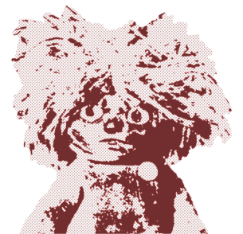
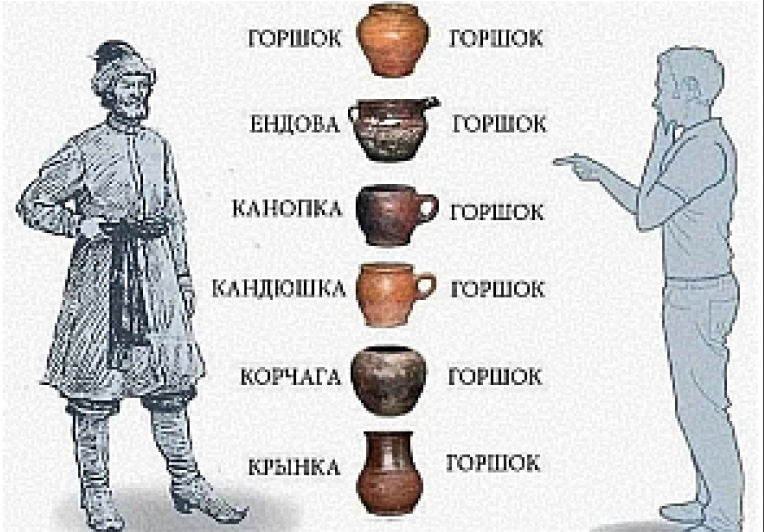

[специальные карточки из нашей библиотеки помогут в пути к разумлению]

УВЕДАТЬ
— ПОЗНАЙВЕЛИКУЮТАЙНУРАСПОЛОЖЕНИЯКУДЫКИНОЙГОРЫ
[прочитайте статью, уведайте наш сказ и спите спокойно]
УВЕДАТЬ
— ИЗУЧИРУССКИЙЯЗЫКОТ «МДА, ТРЭШ»ДО «ЭКО ДИВО!»
[пройдите тест и проверьте свои познания]
УВЕДАТЬ
БИБЛИОТЕКА КАРТОЧЕК
[библиотека слов, пословиц и поговорок в формате карточек. удобный формат для знакомства с информацией и её последующего заучивания, ещё даем современный и привычный контекст употребления: да, мы ведаем в этой теме!]
[библиотека слов, пословиц и поговорок в формате карточек. удобный формат для знакомства с информацией и её последующего заучивания, ещё даем современный и привычный контекст употребления: да, мы ведаем в этой теме!]
УВЕДАТЬ
фразы
пословицы
На аршин борода, да ума на пядь
[На аршин борода, да ума на пядь]
фразы
фразеологизмы
лыка не вяжет
[лыка не вяжет]
слова
вещицы
Черевички
[Черевички]
слова
кто-кто?
пехтюк
[пехтюк]
слова
нежности
поспелочка
[поспелочка]
слова
что делати?
чваниться
[чваниться]
хохмы ради
3–4 мин
КАКАЯ ТЫ ВЕЩЬ НА РУСИ? УЗНАЙ СВОЙ ДРЕВНИЙ АЙДИ?
[Может, ты упорная мялка, компанейская ендова или заботливый лакомник? Проверь, кто твой тотем!]
ТЕСТЫ ДЛЯ ХОХМЫ И ЗНАНИЙ
[подготовили для вас подборку тестов как для забавных молодцев, так и для тех, кто хочет уведать по полной программе. чуз ёр файтер как молвится!]
[подготовили для вас подборку тестов как для забавных молодцев, так и для тех, кто хочет уведать по полной программе. чуз ёр файтер как молвится!]
УВЕДАТЬ
СТАТЬИ О СЛОВАХ, ВЕЩАХ И БЫТЕ
[Собрали самые увлекательные истории из мира вещей, быта и образования слов и захотели поделиться с вами. Приятного чтения. Ведайте!]
[Собрали самые увлекательные истории из мира вещей, быта и образования слов и захотели поделиться с вами. Приятного чтения. Ведайте!]
УВЕДАТЬ
выбор редакции
об истории слов
3–4 мин
ПОЧЕМУ ВСЕ ДВИЖУХИ БЫЛИ ПРИ ЦАРЕ ГОРОХЕ?
[если этот вопрос мучил вас ночью, то уведайте наш сказ и спите спокойно]

об истории вещей
3–4 мин
ЛАПТИ — САМЫЕ ХАЙПОВЫЕ ТАПКИ НА РУСИ?
[Рассказываем об истории лаптей, из чего делали И как носили]
об истории быта
3–4 мин
ендова, корчага и горшок — состав рок-бойсбэнда?
[погодите, разве это не горшок? не спеши отчаиваться, СЕЙЧАС РАЗБЕРЕМСЯ]